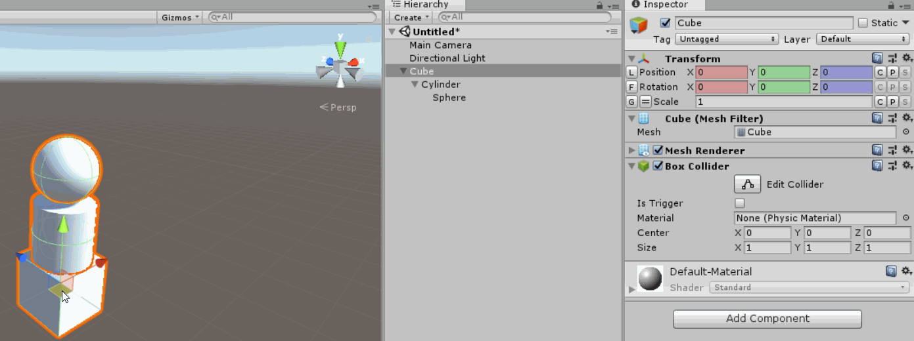
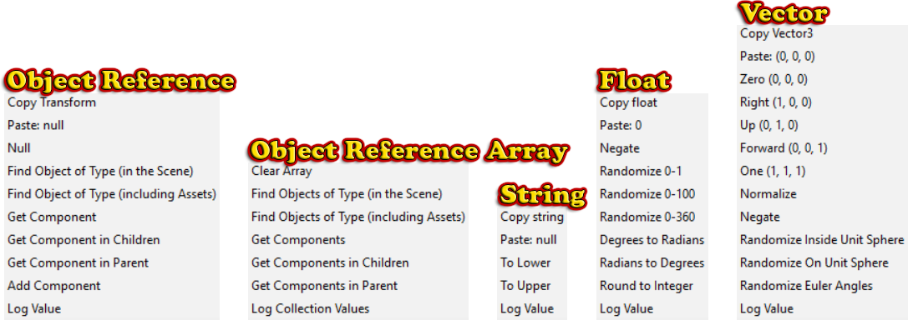
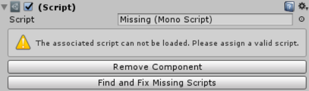

|
Inspector Gadgets is a Unity plugin which enhances various aspects of the Unity Editor to streamline your development workflow. Download it for free and check out the Documentation to get started. |
Enhanced Transform InspectorThe Inspector for the |
Freeze ChildrenPrevent changes you make to a parent object from affecting its children.  |
Draw All Gizmos [Pro-Only]Show scene gizmos for every selected object individually instead of using a single gizmo to move them all at once. 
|
Auto Hide UIInstead of having UI objects block a massive part of your Scene view, Inspector Gadgets can hide them when you aren't working with them and automatically focus the camera on them when you are. 
|
Context Menu FunctionsDozens of useful functions are added to the context menu (right click menu) of each field in the Inspector based on its type.  |
Persist After Play Mode [Pro-Only]This is the main new feature added in Inspector Gadgets v6.0. While in Play Mode, you can Right Click on any |
Object Reference Fields [Pro-Only]References to   |
Decorator Attributes [Pro-Only]Various attributes allow you to customise the way serialized fields are drawn in the Inspector and even add things like buttons. |
Missing ScriptsIf you have any missing scripts, Inspector Gadgets makes it easy to find and fix them.  |